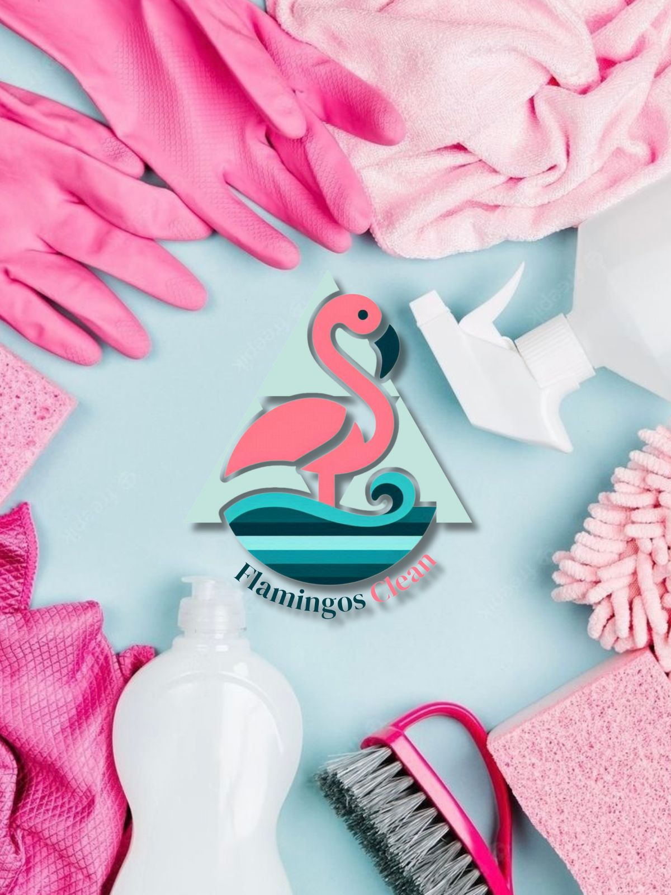
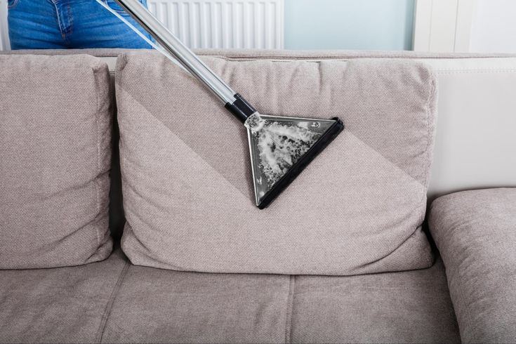

Flamingos Clean
Nos enorgullece ofrecer servicios de limpieza de tapicerías que van más allá de la simple eliminación de manchas. Nuestro equipo de expertos utiliza técnicas avanzadas y productos de limpieza de alta calidad para garantizar resultados excepcionales en cada proyecto. Desde sofás y sillas hasta alfombras y cortinas, estamos aquí para revitalizar tus tapicerías y mejorar la salud y el confort en tu hogar o negocio.
El proceso es
Aspirado: Se recupera un 80% de polvo seco Prelavado, suspendemos la suciedad para que esta salga de la fibra.
Agitación y limpieza con maquina de inyección y succion: En este paso se nota una diferencia marcada en la fibra a limpiar.
Desmanchado: Después de los procesos anteriores habrá manchas, es el momento justo de tratarlas.
De nuevo inyección y succion: Para extraer la mancha y los tratamientos aplicados, en este paso puedes aplicar un desodorante o desinfectante .
Secado: Usamos la maquina de succion para dejar un 25 % de humedad en la fibra misma que secara en un lapso no mayor a 3 horas a temperatura ambiente.

Servicios
Lavado profesional de tapicería:
Todos nuestros productos y servicios son amigables con el medio ambiente.
Acerca de nosotros
En Flamingos Clean, entendemos la importancia de mantener tus muebles en perfectas condiciones. Utilizamos tecnologías de vanguardia y productos ecológicos para garantizar una limpieza efectiva y segura para ti y tu familia. Nuestro equipo de profesionales altamente capacitados trabaja con dedicación y cuidado, adaptándose a las necesidades específicas de cada cliente.
Somos una empresa 100% mexicana, comprometida con la excelencia y la satisfacción de nuestros clientes. Con años de experiencia en el sector, nos especializamos en la limpieza profunda y el mantenimiento de todo tipo de tapicerías, asegurando un ambiente más limpio y saludable para tu hogar, oficina o negocio.
¿Qué puedes esperar de Flamingos Clean?
- Resultados Impecables: Nos aseguramos de que cada tapicería quede como nueva, eliminando manchas, olores y alérgenos.
- Tecnología Avanzada: Utilizamos equipos y productos de limpieza de última generación, respetuosos con el medio ambiente y seguros para tu salud.
- Profesionalismo: Nuestro equipo está compuesto por expertos capacitados que se preocupan por los detalles y la satisfacción del cliente.
- Rapidez y Eficiencia: Ofrecemos un servicio rápido y eficaz, adaptado a tus horarios y necesidades.
Explora nuestra galería para ver la calidad de nuestro trabajo y descubre por qué Flamingos Clean es la opción preferida para la limpieza de tapicerías en la región. Cada imagen es testimonio de nuestra dedicación y compromiso con la excelencia.
{kind=link}
{kind=link}
{kind=link}
Contáctanos
Gracias por considerar a Flamingos Clean para el cuidado de tus tapicerías. Estamos aquí para ayudarte a mantener tus espacios impecables y acogedores. ¡Descubre la diferencia de una limpieza profesional y de calidad con nosotros!

© Flamingos clean. Todos los derechos reservados. Diseño: Alen MKT.